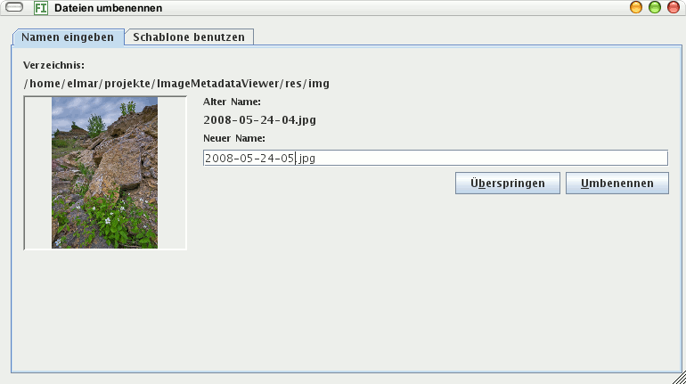
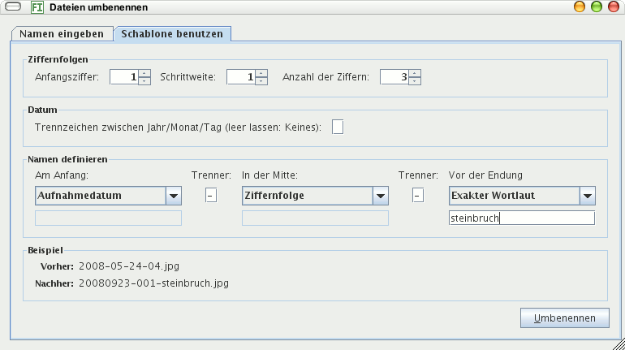

Dieser Befehl gibt den ausgewählten Bildern einen neuen Namen auf dem Datenträger. Sie können jede ausgewählte Datei einzeln umbenennen oder alle auf einmal mit einer Schablone.
Hier geben Sie für jede Datei einen neuen Namen ein, der Dialog zeigt nach jeder Umbenennung die nächste ausgewählte Datei an.

Mit der Schablone können Sie alle ausgewählten Dateien auf einmal einheitlich umbenennen lassen anhand einer Schablone. Sie können bis zu drei Bestandteile des Namens bestimmen:
001
vergeben, für das zweite 002, für das dritte
003 usw. Erhöhen Sie die Schrittweite auf 2, hat
das erste Bild die Ziffernfolge 001, das zweite
003 und das dritte 005.
Unten im Beispiel sehen Sie, wie die erste der ausgewählten Bilddateien nach dem Umbenennen heißt.
